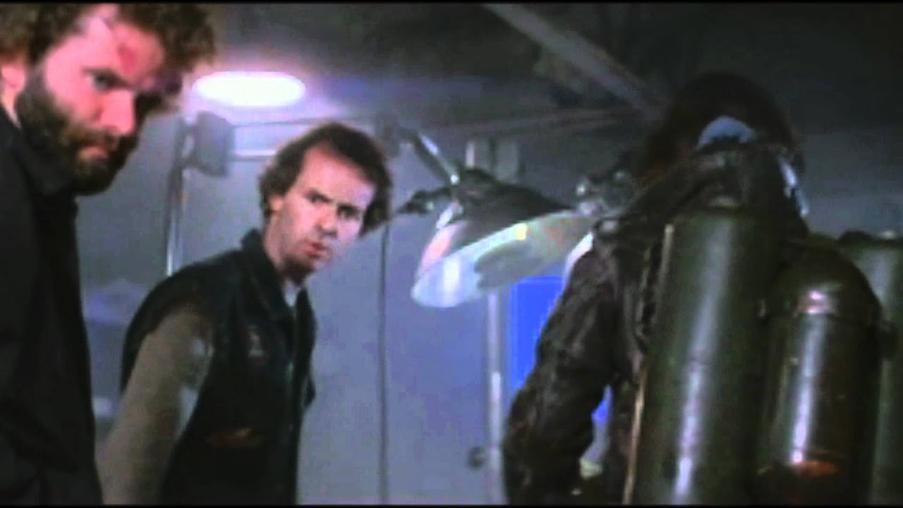

Mac wants the flamethrower…

It’s such a ridiculous notion that anyone on the planet would ever want to read a BLOG, let alone a BLOG authored by some rando nerd like me. Nevertheless, if I force myself to push past the imposter syndrome, disruptive thoughts, anxiety, and the sheer PRETENTIOUSNESS of one’s own BLOG, I can kind of rationalize doing this.
Allow me to elaborate (he wrote to himself). The varied reasons for setting up a BLOG as part of my research lab website include:
- It forces me to further practice using the tools I need for both research and teaching Data Science, including literate programming (I’m using Quarto), version control (I’m using GitHub), and communicating with data.
- It gives me a place to put a lot of the intermediate outcomes and products from the game studio. All the grey material that isn’t a journal publication, grant proposal, meeting abstract, etc. usually ends up getting lost. Examples include outreach and eduation materials for our games, videos and images that we don’t put on our largely silent social media channels, etc.
- It serves as an archive for experimental/exploratory analyses in which I am trying to learn a new technique or explore a new data set, allowing me to return to that idea when its time has finally arrived.
- In the off chance that one of my posts actually helps someone learn something because they found it by googling their particular error message, I will have begun paying back my massive karmic debt to the internet. I can’t count the number of times someone’s blog post helped me figure out how to accomplish something using R.
- I honestly do enjoy thinking about the intersection of science and horror fiction, and some of our newer game projects are going to serve as the platform for that type of content.
- Speaking of our newer game projects, I’ll be using this as a venue to post development updates for studio projects.
- I have ADHD. I mean actual psychiatrist diagnosed, full blown, life altering ADHD. Systems and structures are critical components of the coping strategies I have developed over the years. Maybe… just maybe… this BLOG will help me keep a bunch of stuff organized so I can…. HEY LOOK A SHINY THING!
- Speaking of shiny things… I’m really enjoing the new AI tools for procedural art generation. I’m particularly enamored with midJourney. I’m hoping to use this BLOG for some exploration of those tools.
So why the thumbnail from The Thing as the image for this post? Well the title of the post is the famous quote from Palmer when he sees Norris’ head crawling away on newly grown insect legs. Anyone who knows me who sees I have a BLOG is going to say what Palmer said…